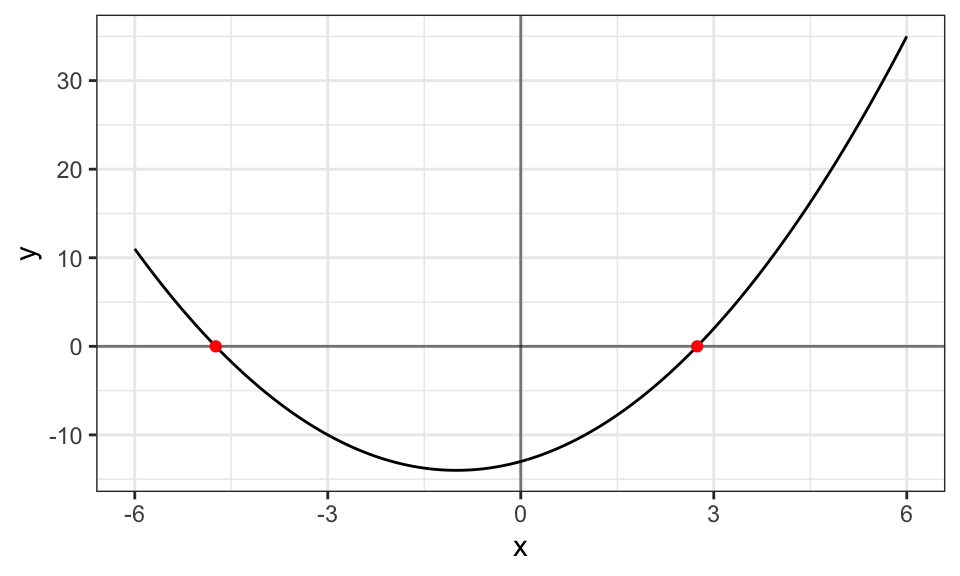

Code
dat <- tibble(x=seq(-6, 6, length.out=1000))|>
mutate(y = x^2 + 2*x -13)
ggplot(data=dat)+
geom_line(aes(x=x, y=y))+
geom_hline(yintercept=0, alpha=0.50)+
geom_vline(xintercept=0, alpha=0.50)+
theme_bw()+
labs(x="x", y="y")+
annotate("point", x=-1-sqrt(14), y=0, color="red")+
annotate("point", x=-1+sqrt(14), y=0, color="red")